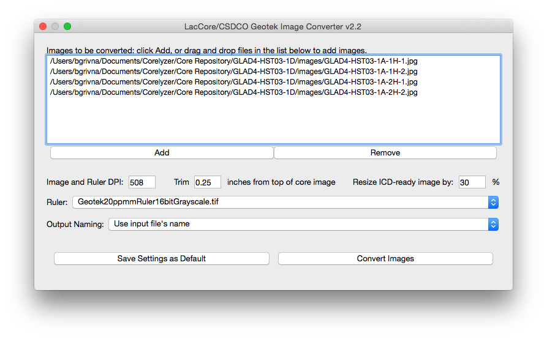
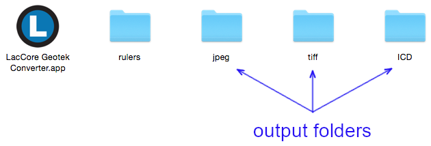

May 9, 2019
version 2.2
LacCore/CSDCO Geotek Converter is a software utility developed by LacCore/CSDCO to prepare core imagery generated by digital linescan imagers (Geotek MSCL-CIS and DMT CoreScan) for viewing and use in applications like the visualization tool Corelyzer, and the Initial Core Description (ICD) tool PSICAT.
The Converter was developed to replace a collection of Photoshop scripts. It is free, available for Windows and macOS/OSX, written in Python, and leans heavily on the OpenCV imaging library. Source code is available on GitHub.
For each vertically-oriented core image processed, the Converter:
The Converter expects that:
It is critical to ensure the resolution of the ruler image matches the resolution of the core image(s) being processed or the ruler's depth scale will be inaccurate.
The application provides a single grayscale ruler image with resolution 508 dots per inch (DPI), or 20 pixels per millimeter (ppmm).
If your core imagery isn't 508 DPI/20 ppmm, you'll need to provide your own ruler image(s). We created our ruler image by scanning a physical ruler on our linescan imager, and suggest you do the same.
Alternately, if you need a lower-resolution ruler, an image editing tool like Photoshop or (free and open-source) GIMP can be used to downscale the provided ruler as needed. For instance, if you need a 254 DPI ruler, resize the provided 508 DPI ruler to 50% (508 dots/inch * 0.5 = 254 dots/inch) of its original size. Note that this method won't work well if you need a higher-resolution ruler, as an upscaled image will appear blurry/pixellated.
To make your ruler images available to the Converter, place them in the "rulers" folder alongside the Converter application, then restart the Converter if it's currently running. Your ruler images should now be available in the Ruler dropdown menu.
There is no limit to the number of ruler images that can be added.
The application consists of a single window.

First, add one or more images to be processed. Images can be selected via the "Add" button, or by dragging and dropping files into the "Images to be converted" list. Next, specify desired processing options. A description of each option follows:
Image and Ruler DPI
The resolution of core image(s) and ruler image, in dots per inch (DPI), e.g. 508.
Trim __ inches from top of core image
If the core top contains extraneous pixels, they can be removed from the output images. The amount to remove is indicated in inches, which is converted to pixels based on the value in Image and Ruler DPI. Note that the "dots" in "dots per inch" is synonymous with "pixels" in this context.
For example, trimming 0.25 inches with a DPI of 508 would result in the leftmost 127 pixels (0.25 inch * 508 pixels/inch) being removed from output images.
If you don't want to trim anything, set this value to zero or leave it blank.
Scale ICD-ready Image by __ %
The percentage by which the output ICD image should be downscaled relative to the original image size.
For example, with a value of 30%, a 1000 x 240 image would be downscaled to 300 x 72.
Ruler
A list of the ruler images in the "rulers" directory. The selected ruler image will be added to the bottom of the core image.
Output Naming
Output images can be named in one of two ways:
Save Settings as Default
You can save the current set of options by clicking the "Save Settings as Default" button. They will be restored the next time the Converter is launched.
Now that your options are set, you can finally process your images! To do so, click the "Convert Images" button. A progress bar will be displayed during conversion, and a message will be displayed when conversion is complete.
Output File Location
The Converter creates three directories alongside the application, where it places the output files:
